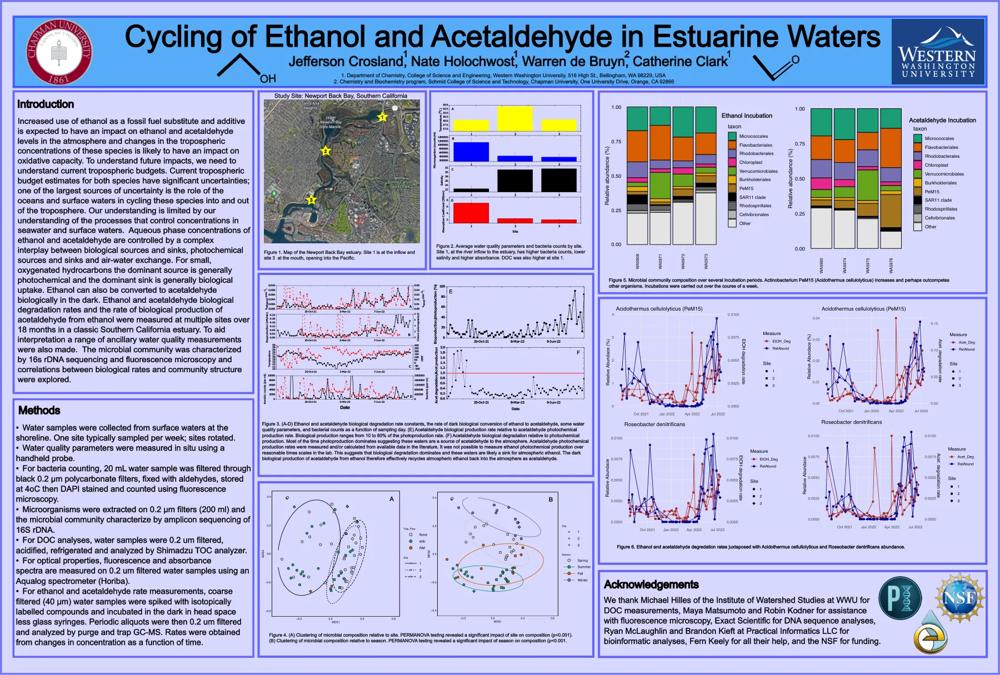
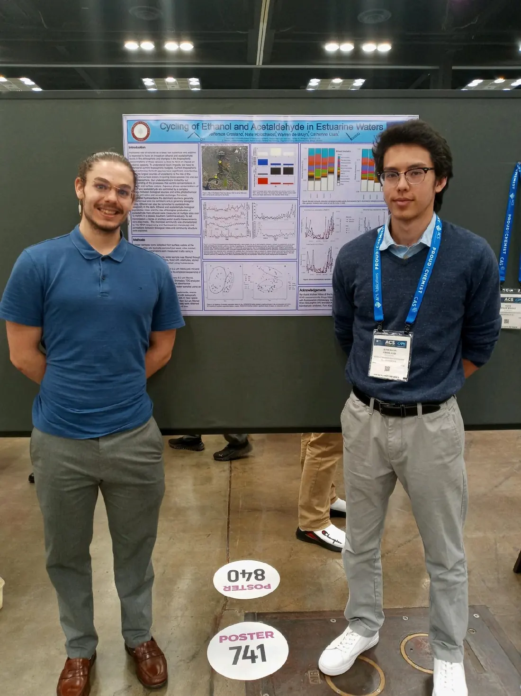
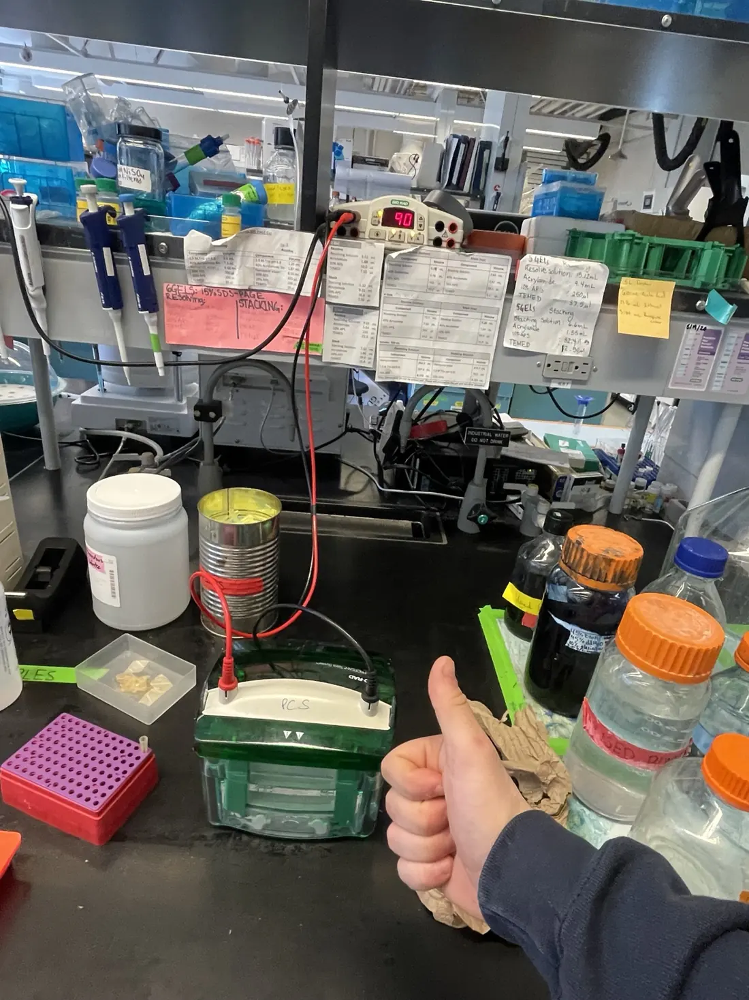

Fitness Trainer — EXOS at Google
South Lake Union campus, Seattle. Coaching and fitness training in a corporate wellness setting.
Coach / Research coauthor / Founder
Bridging human performance, hands-on coaching, biology, and research and scientific communication.
I am a strength and fitness coach at Blinnergy and EXOS, a Western Washington University graduate in kinesiology and biology, and a published research coauthor. I founded NAV to connect evidence-informed coaching, practical education, and better tools for coaches and athletes.

Research & scholarship
Environmental chemistry work, a coauthored peer-reviewed article, and the original conference poster.
Jefferson Crosland, Nate Holochwost, Warren de Bruyn, Catherine Clark · Western Washington University / Chapman University.
The project studied the balance of biological degradation and production of ethanol and acetaldehyde in Southern California estuarine waters, with water-quality observations, microbial characterization, and chemical measurements. The poster reports biological contributions and discusses implications for exchange with the atmosphere.
View original research poster (PDF) →

NAV & professional links
Fast access to the coaching business, the product, education, and original research.
In the laboratory & at conference
Real photographs supplied by the site owner, not AI-generated stock images.


Curriculum vitae
Employment dates and cumulative hours are self-reported in the November 9, 2026 CV and are not independently audited timesheets. See complete public résumé →
South Lake Union campus, Seattle. Coaching and fitness training in a corporate wellness setting.
Woodinville. Individualized strength coaching and group fitness instruction.
Developing a coaching, software, and exercise-science education ecosystem.
Western Washington University under Dr. Catherine Clark.
University of Washington, research with Dr. Angelique Day.
WWU BIOL 348, under Professors Gregory Freedman and Jaci Scheer.
Education, service & clinical foundation
Scientific training and hands-on care experience inform my coaching philosophy without implying a medical-care service.
Certified Personal Trainer, Certified Nursing Assistant, BLS, CPR, First Aid, and Responsive Web Design. Issuing organizations, dates of renewal and active-status verification are not supplied.
Fitness coaching is not clinical diagnosis or treatment.
See NAV coaching, education, and product development, or get in touch.